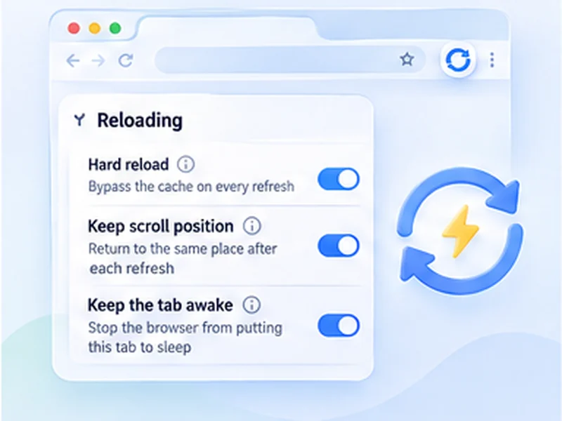

A hard refresh. On repeat.
A normal refresh can show saved copies of a page. Hard reload fetches everything again from the website, every time.

How hard refresh works
A normal refresh can show saved copies of a page. Hard reload fetches everything again from the website, every time.
Most live pages already tell the browser not to cache them. If a normal refresh shows new data, leave hard reload off and save bandwidth.
Quick setup
Open Advanced settings, Reloading.
Switch on Hard reload.
Press Start.
What a hard refresh is
Browsers save copies of a page's files so it loads faster next time. A normal refresh can reuse them, which is why a page sometimes shows old prices, old styles or an old version. A hard refresh, or hard reload, skips those copies and downloads everything again.
You can do one by hand with Ctrl + Shift + R, or Cmd + Shift + R on a Mac. The hard refresh guide lists every shortcut.
Hard reload automatically, every time
Turn on Hard reload and each automatic refresh bypasses the cache, the same as pressing the shortcut yourself. Nothing else changes: the timer, limits and page watching work as usual.
For developers
Reload a local or staging page every few seconds and always see your newest CSS and JavaScript.
For cached pages
Force quotes, scores and stock pages to fetch fresh data instead of a stored copy.
When to leave it off
A hard reload downloads more and takes longer. Pages that already tell the browser not to cache them gain nothing from it. If a normal refresh shows the new data, leave it off, and use intervals of ten seconds or more when it is on.
A worked example: a stylesheet that will not update
You change a colour in your site's CSS, reload, and nothing happens: the browser is using its saved copy. Turn on Hard reload, set a three-second interval and press Start. Every reload now fetches the stylesheet again, so each save shows up within seconds.
Hard refresh, hard reload, force refresh: the same thing
People search for this under several names: hard refresh, hard reload, force refresh, force reload, Ctrl+F5. They all mean a reload that ignores the browser cache. Chrome's developer tools add one more, Empty Cache and Hard Reload, which also clears the stored files for that page first.
Shortcuts, for when you only need it once
Ctrl + Shift + R on Windows and Linux, Cmd + Shift + R on a Mac, in Chrome, Firefox and Edge. The full list is in the guide.
Common mistakes
- Using it everywhere. It slows every refresh and uses more data.
- Blaming the browser for a server cache. If a hard refresh shows the same old page, a CDN or caching plugin is the cause.
- Very short intervals. Give a hard reload time to finish: ten seconds or more on heavy pages.
At a glance
- Always the newest version. Good for prices, scores and status pages that are cached aggressively.
- Handy for development. See your latest CSS and JavaScript without pressing Ctrl+Shift+R after every change.
- Off by default. Hard reloads are slower and heavier, so you switch it on only where you need it.
Questions, answered.
What is the difference between refresh and hard refresh?
A refresh may reuse saved files. A hard refresh downloads everything again.
Does hard reload clear my cache?
No. It ignores the cache for that load. Your saved files, cookies and logins are untouched.
Does it fix a page that will not update?
Often. If it does not, the website's own server or CDN is caching the page, which only the site owner can clear.
Can I hard refresh on a schedule in Firefox too?
Yes. The setting works the same in Chrome and Firefox.
Does it use more data?
Yes, because nothing is reused. Keep intervals longer when it is on.
Is this the same as Ctrl+Shift+R?
Yes, it bypasses the cache the same way, on every automatic refresh.
Try it on your next open tab.
Free for Chrome and Firefox, with no account required.
Not seeing the feature you need?
Share the browser task you would like to make easier. Your idea helps guide what gets built next.